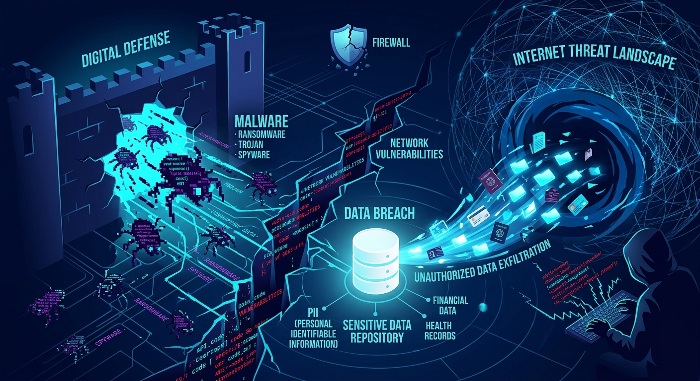

INICIO Y AMENAZAS DIGITALES MODERNASEs necesario entender cómo funcionan los ataques ya que ayuda a construir una defensa sólida ante amenazas como malware, ransomware y filtraciones de datos.  |
|---|
Revisa los conceptos clave sobre los peligros más frecuentes a los que se enfrentan usuarios y empresas en la actualidad.
1. Malware y Virus
Mecanismo: Software que infecta dispositivos mediante descargas, adjuntos o vulnerabilidades. Se replica u oculta en el sistema. |
2. Ransomware
Mecanismo: Cifra todos tus archivos mediante algoritmos criptográficos fuertes e inquebrantables. |
3. Filtraciones Masivas de Datos
Mecanismo: Extracción masiva de bases de datos por mala configuración de servidores, phishing o inyección SQL. |
4. Ataques DDoS
Mecanismo: Redes de dispositivos infectados (botnets) envían tráfico masivo simulado hacia un objetivo. |
Prácticas que debes seguir para proteger la integridad de tus dispositivos y datos ante las amenazas cibernéticas.
1. Copias de Seguridad
Acción: Realiza respaldos periódicos y mantén una copia desconectada de la red principal. |
2. Autenticación Multifactor (MFA)
Acción: Activa el segundo factor de verificación en todas tus cuentas y servicios digitales. |
3. Actualizaciones Continuas
Acción: Mantén el sistema operativo, parches de seguridad y aplicaciones al día. |
4. Higiene Digital y Redes
Acción:Evita enlaces sospechosos que encuentres, no descargues archivos desconocidos por el internet y utiliza servicios CDN/WAF. |
| Volver al Índice Principal |
|---|